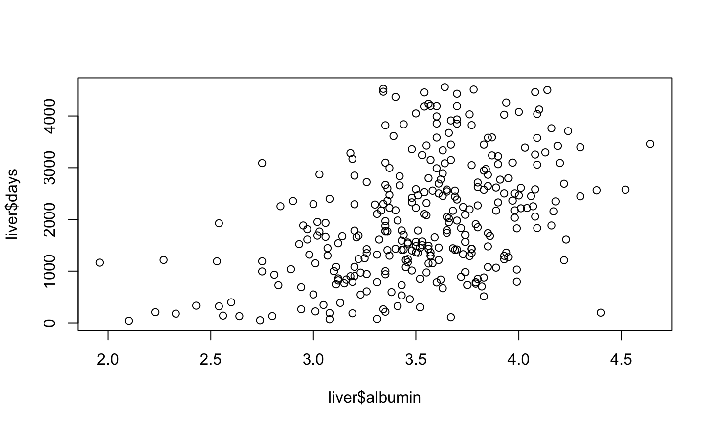
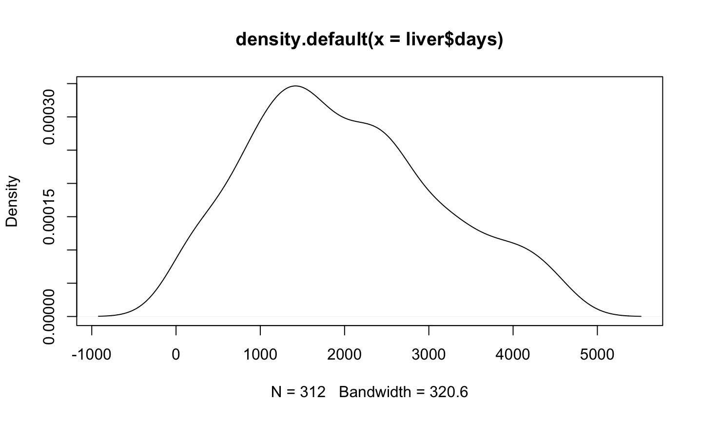

- Intro to R and RStudio
- Working With Data
- Statistics and Modeling
- More info
2/17/2020
Contents
Intro to R and RStudio
- RStudio
- Using Help
- Data types
- Operations
- Working with Data
- Libraries
RStudio

Using Help
Various functions for finding help
# Finding out help about specific functions help(sum) ?sum # Finding help about topics ??sum # Operations requires backticks around ?`*`
Data Types
Basic Data Types:
Numeric: Numbers ex. 1, 1.43, 1e10
Char: Strings ex. "cat", "a", "two words"
Factor: Categorical Data ex. Male/Female, Age Ranges (10-19, 20-29, …)
Logical: True/False values
Other types include: functions, expressions, object, etc.
Data Types - Vectors
Vector combination of elements of the same type
c(1, 2, 3, 4)
1:3
c("cat", "dog", "horse", "cow")
factor(c("Male", "Female", "Male", "Male"))
## [1] Male Female Male Male ## Levels: Female Male
Data Types - Matrices
matrix(1:16, ncol = 4, byrow = T)
## [,1] [,2] [,3] [,4] ## [1,] 1 2 3 4 ## [2,] 5 6 7 8 ## [3,] 9 10 11 12 ## [4,] 13 14 15 16
t(matrix(1:16, ncol = 4, byrow = T))
## [,1] [,2] [,3] [,4] ## [1,] 1 5 9 13 ## [2,] 2 6 10 14 ## [3,] 3 7 11 15 ## [4,] 4 8 12 16
Data Types - Data Frames
Contains nxp collection of vectors where element i refers to the ith observation
x <- data.frame(name = c("Alex", "Brad", "Catherine"),
age = c(25, 46, 32),
sex = factor("Male", "Male", "Female"))
print(x)
## name age sex ## 1 Alex 25 Female ## 2 Brad 46 Female ## 3 Catherine 32 Female
str(x)
## 'data.frame': 3 obs. of 3 variables: ## $ name: Factor w/ 3 levels "Alex","Brad",..: 1 2 3 ## $ age : num 25 46 32 ## $ sex : Factor w/ 1 level "Female": 1 1 1
Data Types - Lists
Lists - collection of objects
list(parents = c("Jack", "Jill"),
siblings = c("Nick", "Joe", "Kevin"),
cars = data.frame(make = c("Ford", "Mazda"),
year = c(1999, 2003),
type = c("truck", "coupe")))
## $parents ## [1] "Jack" "Jill" ## ## $siblings ## [1] "Nick" "Joe" "Kevin" ## ## $cars ## make year type ## 1 Ford 1999 truck ## 2 Mazda 2003 coupe
Operations in R
Basic Operations
4 * 5
## [1] 20
7 %% 5
## [1] 2
3^2
## [1] 9
log(5)
## [1] 1.609438
Operations in R
Assignment
x <- 3 * 4 + 2 print(x)
## [1] 14
family <- data.frame(name = c("Nick", "Joe", "Jill"),
relation = c("Brother", "Brother", "Mother"))
print(family)
## name relation ## 1 Nick Brother ## 2 Joe Brother ## 3 Jill Mother
Operations in R
Assignment
x <- 3 * 4 + 2 print(x)
## [1] 14
family <- data.frame(name = c("Nick", "Joe", "Jill"),
relation = c("Brother", "Brother", "Mother"))
print(family)
## name relation ## 1 Nick Brother ## 2 Joe Brother ## 3 Jill Mother
Operations in R
Relational
x <- 5:9 y <- seq(2, 10, 2) x > y
## [1] TRUE TRUE TRUE FALSE FALSE
Logical
(x > y) | (x %% 2 == 0)
## [1] TRUE TRUE TRUE TRUE FALSE
Operation Precedence

Tip: Use parentheses if unclear
Programming Basics - indexing
x <- 10:20 print(x)
## [1] 10 11 12 13 14 15 16 17 18 19 20
x[c(1, 2, 3)]
## [1] 10 11 12
x[x%%2 == 0] # select even values only
## [1] 10 12 14 16 18 20
x[x%%2 == 0] <- NA # Make even values NA
Programming Basics - if/else statements
x <- -5
if(x > 0){
print("positive")
} else if(x == 0){
print("zero")
} else{
print("negative")
}
## [1] "negative"
ifelse(x > 0, "postive", "not positive")
## [1] "not positive"
Programming Basics - for loop
x <- c(1, 2, 3, 4, 5) for(i in x) print(i)
## [1] 1 ## [1] 2 ## [1] 3 ## [1] 4 ## [1] 5
x <- c("A", "B", "C")
for(i in x) print(i)
## [1] "A" ## [1] "B" ## [1] "C"
for(i in seq_along(x)) print(x[i])
## [1] "A" ## [1] "B" ## [1] "C"
Programming Basics - while loop
x <- 5
i <- 1
while(i < x){
print(i^2) # what to do
i <- i + 1 # increment i
}
## [1] 1 ## [1] 4 ## [1] 9 ## [1] 16
i <- 1
while(TRUE){
print(i^2) # what to do
if(i >= x) break # condition to break loop
i <- i + 1 # increment i
}
## [1] 1 ## [1] 4 ## [1] 9 ## [1] 16 ## [1] 25
Working with Data
- Data Frames and Indexing
- Functions
- Importing/Exporting Data
- Data Manipulation
- Plotting
Cars dataset
data("mtcars")
head(mtcars) # Shows top 6 observations
## mpg cyl disp hp drat wt qsec vs am gear carb ## Mazda RX4 21.0 6 160 110 3.90 2.620 16.46 0 1 4 4 ## Mazda RX4 Wag 21.0 6 160 110 3.90 2.875 17.02 0 1 4 4 ## Datsun 710 22.8 4 108 93 3.85 2.320 18.61 1 1 4 1 ## Hornet 4 Drive 21.4 6 258 110 3.08 3.215 19.44 1 0 3 1 ## Hornet Sportabout 18.7 8 360 175 3.15 3.440 17.02 0 0 3 2 ## Valiant 18.1 6 225 105 2.76 3.460 20.22 1 0 3 1
str(mtcars) # Structure of data frame
## 'data.frame': 32 obs. of 11 variables: ## $ mpg : num 21 21 22.8 21.4 18.7 18.1 14.3 24.4 22.8 19.2 ... ## $ cyl : num 6 6 4 6 8 6 8 4 4 6 ... ## $ disp: num 160 160 108 258 360 ... ## $ hp : num 110 110 93 110 175 105 245 62 95 123 ... ## $ drat: num 3.9 3.9 3.85 3.08 3.15 2.76 3.21 3.69 3.92 3.92 ... ## $ wt : num 2.62 2.88 2.32 3.21 3.44 ... ## $ qsec: num 16.5 17 18.6 19.4 17 ... ## $ vs : num 0 0 1 1 0 1 0 1 1 1 ... ## $ am : num 1 1 1 0 0 0 0 0 0 0 ... ## $ gear: num 4 4 4 3 3 3 3 4 4 4 ... ## $ carb: num 4 4 1 1 2 1 4 2 2 4 ...
Cars dataset
summary(mtcars) # Summary statistics of data frame
## mpg cyl disp hp ## Min. :10.40 Min. :4.000 Min. : 71.1 Min. : 52.0 ## 1st Qu.:15.43 1st Qu.:4.000 1st Qu.:120.8 1st Qu.: 96.5 ## Median :19.20 Median :6.000 Median :196.3 Median :123.0 ## Mean :20.09 Mean :6.188 Mean :230.7 Mean :146.7 ## 3rd Qu.:22.80 3rd Qu.:8.000 3rd Qu.:326.0 3rd Qu.:180.0 ## Max. :33.90 Max. :8.000 Max. :472.0 Max. :335.0 ## drat wt qsec vs ## Min. :2.760 Min. :1.513 Min. :14.50 Min. :0.0000 ## 1st Qu.:3.080 1st Qu.:2.581 1st Qu.:16.89 1st Qu.:0.0000 ## Median :3.695 Median :3.325 Median :17.71 Median :0.0000 ## Mean :3.597 Mean :3.217 Mean :17.85 Mean :0.4375 ## 3rd Qu.:3.920 3rd Qu.:3.610 3rd Qu.:18.90 3rd Qu.:1.0000 ## Max. :4.930 Max. :5.424 Max. :22.90 Max. :1.0000 ## am gear carb ## Min. :0.0000 Min. :3.000 Min. :1.000 ## 1st Qu.:0.0000 1st Qu.:3.000 1st Qu.:2.000 ## Median :0.0000 Median :4.000 Median :2.000 ## Mean :0.4062 Mean :3.688 Mean :2.812 ## 3rd Qu.:1.0000 3rd Qu.:4.000 3rd Qu.:4.000 ## Max. :1.0000 Max. :5.000 Max. :8.000
Cars dataset
pairs(mtcars) # Pairs plot to quickly see relationships

Cars dataset
mtcars2 <- within(mtcars, {
vs <- factor(vs, labels = c("V", "S"))
am <- factor(am, labels = c("automatic", "manual"))
cyl <- ordered(cyl)
gear <- ordered(gear)
carb <- ordered(carb)
})
summary(mtcars2)
## mpg cyl disp hp drat ## Min. :10.40 4:11 Min. : 71.1 Min. : 52.0 Min. :2.760 ## 1st Qu.:15.43 6: 7 1st Qu.:120.8 1st Qu.: 96.5 1st Qu.:3.080 ## Median :19.20 8:14 Median :196.3 Median :123.0 Median :3.695 ## Mean :20.09 Mean :230.7 Mean :146.7 Mean :3.597 ## 3rd Qu.:22.80 3rd Qu.:326.0 3rd Qu.:180.0 3rd Qu.:3.920 ## Max. :33.90 Max. :472.0 Max. :335.0 Max. :4.930 ## wt qsec vs am gear carb ## Min. :1.513 Min. :14.50 V:18 automatic:19 3:15 1: 7 ## 1st Qu.:2.581 1st Qu.:16.89 S:14 manual :13 4:12 2:10 ## Median :3.325 Median :17.71 5: 5 3: 3 ## Mean :3.217 Mean :17.85 4:10 ## 3rd Qu.:3.610 3rd Qu.:18.90 6: 1 ## Max. :5.424 Max. :22.90 8: 1
Cars dataset
str(mtcars2)
## 'data.frame': 32 obs. of 11 variables: ## $ mpg : num 21 21 22.8 21.4 18.7 18.1 14.3 24.4 22.8 19.2 ... ## $ cyl : Ord.factor w/ 3 levels "4"<"6"<"8": 2 2 1 2 3 2 3 1 1 2 ... ## $ disp: num 160 160 108 258 360 ... ## $ hp : num 110 110 93 110 175 105 245 62 95 123 ... ## $ drat: num 3.9 3.9 3.85 3.08 3.15 2.76 3.21 3.69 3.92 3.92 ... ## $ wt : num 2.62 2.88 2.32 3.21 3.44 ... ## $ qsec: num 16.5 17 18.6 19.4 17 ... ## $ vs : Factor w/ 2 levels "V","S": 1 1 2 2 1 2 1 2 2 2 ... ## $ am : Factor w/ 2 levels "automatic","manual": 2 2 2 1 1 1 1 1 1 1 ... ## $ gear: Ord.factor w/ 3 levels "3"<"4"<"5": 2 2 2 1 1 1 1 2 2 2 ... ## $ carb: Ord.factor w/ 6 levels "1"<"2"<"3"<"4"<..: 4 4 1 1 2 1 4 2 2 4 ...
Indexing
mtcars2$mpg # Use $ to select specific variable
## [1] 21.0 21.0 22.8 21.4 18.7 18.1 14.3 24.4 22.8 19.2 17.8 16.4 17.3 15.2 10.4 ## [16] 10.4 14.7 32.4 30.4 33.9 21.5 15.5 15.2 13.3 19.2 27.3 26.0 30.4 15.8 19.7 ## [31] 15.0 21.4
mtcars2$mpg[c(1, 2, 5, 7)] # [] to slice data
## [1] 21.0 21.0 18.7 14.3
mtcars2[mtcars$cyl == 6,] # [] to slice data
## mpg cyl disp hp drat wt qsec vs am gear carb ## Mazda RX4 21.0 6 160.0 110 3.90 2.620 16.46 V manual 4 4 ## Mazda RX4 Wag 21.0 6 160.0 110 3.90 2.875 17.02 V manual 4 4 ## Hornet 4 Drive 21.4 6 258.0 110 3.08 3.215 19.44 S automatic 3 1 ## Valiant 18.1 6 225.0 105 2.76 3.460 20.22 S automatic 3 1 ## Merc 280 19.2 6 167.6 123 3.92 3.440 18.30 S automatic 4 4 ## Merc 280C 17.8 6 167.6 123 3.92 3.440 18.90 S automatic 4 4 ## Ferrari Dino 19.7 6 145.0 175 3.62 2.770 15.50 V manual 5 6
Functions
mean(mtcars2$mpg) # Mean of a specific column
## [1] 20.09062
mean(mtcars2) # Dataset contains mixed types
## Warning in mean.default(mtcars2): argument is not numeric or logical: returning ## NA
## [1] NA
colSums(mtcars) # Acts on each column individually
## mpg cyl disp hp drat wt qsec vs ## 642.900 198.000 7383.100 4694.000 115.090 102.952 571.160 14.000 ## am gear carb ## 13.000 118.000 90.000
Functions - Writing your own
function_name <- function(argument){
code to perform function here
return(return_value)
# OR
return_value
}
pow <- function(dat, val){
# raises data vector (or matrix) to the val power
dat^val
}
pow(mtcars2$mpg, 2.4)
## [1] 1490.4805 1490.4805 1815.6981 1559.5276 1128.2877 1043.3465 592.6612 ## [8] 2136.6608 1815.6981 1202.0512 1002.3237 823.4273 936.0750 686.1588 ## [15] 275.9815 275.9815 633.2302 4219.9570 3621.5676 4704.1296 1577.0748 ## [22] 719.1112 686.1588 498.0167 1202.0512 2797.6305 2488.4908 3621.5676 ## [29] 752.9688 1278.5536 664.6898 1559.5276
Importing/Exporting Data
lung <- read.csv("~/Desktop/RTutorial/lung_cancer.csv",
header = T,
stringsAsFactors = F)
str(lung)
## 'data.frame': 137 obs. of 8 variables: ## $ treatment : int 1 1 1 1 1 1 1 1 1 1 ... ## $ cell_type : int 1 1 1 1 1 1 1 1 1 1 ... ## $ survival_days : int 72 411 228 126 118 10 82 110 314 100 ... ## $ status : int 1 1 1 1 1 1 1 1 1 0 ... ## $ karnofsky_score : int 60 70 60 60 70 20 40 80 50 70 ... ## $ months_from_diagnosis: int 7 5 3 9 11 5 10 29 18 6 ... ## $ age_years : int 69 64 38 63 65 49 69 68 43 70 ... ## $ prior_therapy : int 0 10 0 10 10 0 10 0 0 0 ...
write.table(lung, sep = "\t", file = "~/Desktop/lung2.txt")
Data Manipulation
Primary Biliary Cirrhosis The data set found in appendix D of Fleming and Harrington, Counting Processes and Survival Analysis, Wiley, 1991
Variables:
- case number
- number of days between registration and the earlier of death, transplantation, or study analysis time in July, 1986
- status
- drug: 1= D-penicillamine, 2=placebo
- age in days
- sex: 0=male, 1=female
- presence of ascites: 0=no 1=yes
- presence of hepatomegaly 0=no 1=yes
- presence of spiders 0=no 1=yes
- presence of edema 0=no edema and no diuretic therapy for edema; .5 = edema present without diuretics, or edema resolved by diuretics; 1 = edema despite diuretic therapy
Data Manipulation
Primary Biliary Cirrhosis The data set found in appendix D of Fleming and Harrington, Counting Processes and Survival Analysis, Wiley, 1991
Variables (cont.):
- serum bilirubin in mg/dl
- serum cholesterol in mg/dl
- albumin in gm/dl
- urine copper in ug/day
- alkaline phosphatase in U/liter
- SGOT in U/ml
- triglicerides in mg/dl
- platelets per cubic ml / 1000
- prothrombin time in seconds
- histologic stage of disease
Data Manipulation
First steps: Import data
liver <- read.csv("~/Desktop/RTutorial/cirrhosis.csv",
header = T,
stringsAsFactors = F,
na.strings = ".")
List of Manipulations:
- Combine censored status (0 and 1 -> 0 and 2 -> 1)
- Convert non-numeric data to factors
- Change days to months
Data Manipulation
Combining censored status
table(liver$status)
## ## 0 1 2 ## 168 19 125
liver$status <- ifelse(liver$status %in% c(0, 1), 0, 1)
Note: replaced status variable with updated version. Sometimes useful to create a completely new variable or create a new copy of the dataset for reproduceability.
Data Manipulation
Changing binary and categorical data from numeric to factor / char
liver$drug <- liver$drug == 1 # Turn into TRUE/FALSE where FALSE is placebo
liver <- within(liver, {
sex <- factor(sex, labels = c("Male", "Female"))
ascites <- as.logical(ascites)
hepatomegaly <- as.logical(hepatomegaly)
spiders <- as.logical(spiders)
edema <- factor(edema, labels = c("None", "Present w/o diuretics", "Present despite diuretics"))
histologic_stage <- ordered(histologic_stage) # Ordered factor
})
head(liver)
## case_number days status drug age sex ascites hepatomegaly spiders ## 1 1 400 1 TRUE 21464 Female TRUE TRUE TRUE ## 2 2 4500 0 TRUE 20617 Female FALSE TRUE TRUE ## 3 3 1012 1 TRUE 25594 Male FALSE FALSE FALSE ## 4 4 1925 1 TRUE 19994 Female FALSE TRUE TRUE ## 5 5 1504 0 FALSE 13918 Female FALSE TRUE TRUE ## 6 6 2503 1 FALSE 24201 Female FALSE TRUE FALSE ## edema bilirubin cholesterol albumin urine_copper ## 1 Present despite diuretics 14.5 261 2.60 156 ## 2 None 1.1 302 4.14 54 ## 3 Present w/o diuretics 1.4 176 3.48 210 ## 4 Present w/o diuretics 1.8 244 2.54 64 ## 5 None 3.4 279 3.53 143 ## 6 None 0.8 248 3.98 50 ## alkaline_phosphatase SGOT triglicerides platelets prothrombin_time ## 1 1718.0 137.95 172 190 12.2 ## 2 7394.8 113.52 88 221 10.6 ## 3 516.0 96.10 55 151 12.0 ## 4 6121.8 60.63 92 183 10.3 ## 5 671.0 113.15 72 136 10.9 ## 6 944.0 93.00 63 NA 11.0 ## histologic_stage ## 1 4 ## 2 3 ## 3 4 ## 4 4 ## 5 3 ## 6 3
Plotting - Scatterplots
plot(x = liver$albumin, y = liver$days)

Plotting - Scatterplots
plot(x = liver$albumin, y = liver$days, col = liver$status + 1)
Plotting - Scatterplots
plot(x = liver$albumin, y = liver$days, col = liver$histologic_stage)
Plotting - Histograms
hist(liver$days)
Plotting - Histograms
hist(liver$days, breaks = 30)
Plotting - Density Plot
plot(density(liver$days))

Plotting
Boxplots
boxplot(data = liver, days~sex)
Plotting
boxplot(data = liver, days~drug + ascites)
Plotting
boxplot(data = liver, days~drug + edema + ascites)
Time to do some modeling
Statistics and Modeling
- Statistics and Summary Info
- Regression
- Survival Analysis
Statistics and Summary Info
summary(liver)
## case_number days status drug ## Min. : 1.00 Min. : 41 Min. :0.0000 Mode :logical ## 1st Qu.: 78.75 1st Qu.:1191 1st Qu.:0.0000 FALSE:154 ## Median :156.50 Median :1840 Median :0.0000 TRUE :158 ## Mean :156.50 Mean :2006 Mean :0.4006 ## 3rd Qu.:234.25 3rd Qu.:2697 3rd Qu.:1.0000 ## Max. :312.00 Max. :4556 Max. :1.0000 ## ## age sex ascites hepatomegaly spiders ## Min. : 9598 Male : 36 Mode :logical Mode :logical Mode :logical ## 1st Qu.:15428 Female:276 FALSE:288 FALSE:152 FALSE:222 ## Median :18188 TRUE :24 TRUE :160 TRUE :90 ## Mean :18269 ## 3rd Qu.:20715 ## Max. :28650 ## ## edema bilirubin cholesterol ## None :263 Min. : 0.300 Min. : 120.0 ## Present w/o diuretics : 29 1st Qu.: 0.800 1st Qu.: 249.5 ## Present despite diuretics: 20 Median : 1.350 Median : 309.5 ## Mean : 3.256 Mean : 369.5 ## 3rd Qu.: 3.425 3rd Qu.: 400.0 ## Max. :28.000 Max. :1775.0 ## NA's :28 ## albumin urine_copper alkaline_phosphatase SGOT ## Min. :1.96 Min. : 4.00 Min. : 289.0 Min. : 26.35 ## 1st Qu.:3.31 1st Qu.: 41.25 1st Qu.: 871.5 1st Qu.: 80.60 ## Median :3.55 Median : 73.00 Median : 1259.0 Median :114.70 ## Mean :3.52 Mean : 97.65 Mean : 1982.7 Mean :122.56 ## 3rd Qu.:3.80 3rd Qu.:123.00 3rd Qu.: 1980.0 3rd Qu.:151.90 ## Max. :4.64 Max. :588.00 Max. :13862.4 Max. :457.25 ## NA's :2 ## triglicerides platelets prothrombin_time histologic_stage ## Min. : 33.00 Min. : 62.0 Min. : 9.00 1: 16 ## 1st Qu.: 84.25 1st Qu.:199.8 1st Qu.:10.00 2: 67 ## Median :108.00 Median :257.0 Median :10.60 3:120 ## Mean :124.70 Mean :261.9 Mean :10.73 4:109 ## 3rd Qu.:151.00 3rd Qu.:322.5 3rd Qu.:11.10 ## Max. :598.00 Max. :563.0 Max. :17.10 ## NA's :30 NA's :4
Statistics and Summary Info
mean(liver$days)
## [1] 2006.362
var(liver$days)
## [1] 1261760
sd(liver$days)
## [1] 1123.281
Statistical Tests
t.test(data = liver, days ~ ascites)
## ## Welch Two Sample t-test ## ## data: days by ascites ## t = 6.4868, df = 28.51, p-value = 4.582e-07 ## alternative hypothesis: true difference in means is not equal to 0 ## 95 percent confidence interval: ## 884.7703 1700.4866 ## sample estimates: ## mean in group FALSE mean in group TRUE ## 2105.7951 813.1667
Linear Regression
Suppose we believe there is a mathematical relationship between variables. We’d like to model the underlying relationship as a linear function: \[y = \beta_0 + \beta_1 x_1 + \beta_2 x_2 + ... + \beta_p x_p + \epsilon\] where \(\epsilon\) represents the error between the fitted line and a data point at the corresponding values of x \[\epsilon \sim N(0, \sigma^2)\]
Linear Regression - Liver Cirrhosis
We are interested in modeling the survival time (in days) as a function of other variables. ex. Simple Linear Regression for a single variable, albumin
plot(liver$albumin, liver$days)
Linear Regression - Liver Cirrhosis
We are interested in modeling the survival time (in days) as a function of other variables. ex. Simple Linear Regression for a single variable, albumin
g <- lm(days ~ albumin, data = liver) summary(g)
## ## Call: ## lm(formula = days ~ albumin, data = liver) ## ## Residuals: ## Min 1Q Median 3Q Max ## -2834.4 -722.4 -126.5 597.4 2726.5 ## ## Coefficients: ## Estimate Std. Error t value Pr(>|t|) ## (Intercept) -2097.8 484.8 -4.328 2.04e-05 *** ## albumin 1166.0 136.7 8.526 6.75e-16 *** ## --- ## Signif. codes: 0 '***' 0.001 '**' 0.01 '*' 0.05 '.' 0.1 ' ' 1 ## ## Residual standard error: 1013 on 310 degrees of freedom ## Multiple R-squared: 0.19, Adjusted R-squared: 0.1874 ## F-statistic: 72.7 on 1 and 310 DF, p-value: 6.745e-16
Linear Regression - Liver Cirrhosis
Predicted Model: \[Survival = -2097.8 + 1166.0 * Albumin\]
plot(liver$albumin, liver$days) abline(g, col = "red")
Linear Regression - Liver Cirrhosis
We are interested in modeling the survival time (in days) as a function of other variables. ex. Simple Linear Regression for a single variable, albumin
g <- lm(days ~ . - status - case_number, data = liver) summary(g)
## ## Call: ## lm(formula = days ~ . - status - case_number, data = liver) ## ## Residuals: ## Min 1Q Median 3Q Max ## -2652.59 -592.04 -73.16 567.77 2474.73 ## ## Coefficients: ## Estimate Std. Error t value Pr(>|t|) ## (Intercept) -9.666e+02 1.069e+03 -0.904 0.366657 ## drugTRUE -5.017e+01 1.144e+02 -0.438 0.661405 ## age -4.931e-03 1.640e-02 -0.301 0.763943 ## sexFemale 8.459e+01 1.899e+02 0.445 0.656411 ## ascitesTRUE -1.384e+02 3.257e+02 -0.425 0.671153 ## hepatomegalyTRUE -6.114e+01 1.339e+02 -0.457 0.648269 ## spidersTRUE -1.282e+02 1.396e+02 -0.918 0.359308 ## edemaPresent w/o diuretics -1.479e+02 2.103e+02 -0.703 0.482518 ## edemaPresent despite diuretics -4.423e+02 3.376e+02 -1.310 0.191405 ## bilirubin -5.923e+01 1.869e+01 -3.169 0.001714 ** ## cholesterol -2.887e-01 2.935e-01 -0.984 0.326270 ## albumin 5.770e+02 1.654e+02 3.489 0.000571 *** ## urine_copper -2.033e+00 7.935e-01 -2.563 0.010962 * ## alkaline_phosphatase 1.033e-01 2.772e-02 3.728 0.000238 *** ## SGOT 6.505e-01 1.162e+00 0.560 0.575930 ## triglicerides 5.412e-01 1.015e+00 0.533 0.594225 ## platelets 5.889e-02 6.581e-01 0.089 0.928772 ## prothrombin_time 1.255e+02 6.585e+01 1.906 0.057784 . ## histologic_stage.L -5.294e+02 2.147e+02 -2.466 0.014338 * ## histologic_stage.Q 6.983e+01 1.688e+02 0.414 0.679473 ## histologic_stage.C -5.813e+01 1.193e+02 -0.487 0.626547 ## --- ## Signif. codes: 0 '***' 0.001 '**' 0.01 '*' 0.05 '.' 0.1 ' ' 1 ## ## Residual standard error: 908.8 on 255 degrees of freedom ## (36 observations deleted due to missingness) ## Multiple R-squared: 0.3811, Adjusted R-squared: 0.3326 ## F-statistic: 7.852 on 20 and 255 DF, p-value: < 2.2e-16
Survival Analysis
Kaplan-Meier estimator provides a non-parametric estimate for survival time, \[P(T > t).\] Data may be censored, in that the study ends or patients drop out before the event time is observed. A Kaplan-Meier estimator still accounts for censored data.
library(survival)
## ## Attaching package: 'survival'
## The following object is masked _by_ '.GlobalEnv': ## ## lung
head(Surv(liver$days, liver$status))
## [1] 400 4500+ 1012 1925 1504+ 2503
plot(Surv(liver$days, liver$status), mark.time = T)
Log-Rank Test for Differences
Survival conditioned on drug status
survdiff(Surv(days, status) ~ drug, data = liver)
## Call: ## survdiff(formula = Surv(days, status) ~ drug, data = liver) ## ## N Observed Expected (O-E)^2/E (O-E)^2/V ## drug=FALSE 154 60 61.8 0.0513 0.102 ## drug=TRUE 158 65 63.2 0.0502 0.102 ## ## Chisq= 0.1 on 1 degrees of freedom, p= 0.7
Log-Rank Test for Differences
Survival conditioned on drug status
plot(survfit(Surv(days, status) ~ drug, data = liver), col = c(1,2))
Log-Rank Test for Differences
Useful for qualitative data to show and test differences between categories. Does not provide a model to describe how survival varies with respect to covariates.
Survival conditioned on presence of edema
plot(survfit(Surv(days, status) ~ edema, data = liver), col = c(1, 2, 3))
Cox Proportional Hazards Model
Define the hazard function as the probability of death occuring in the next dt conditioned on it not yet occuring: \[\lambda(t) = \frac{d}{dt}\frac{P(t <= T < t + dt)}{P(T >= t)} = -\frac{S'(t)}{S(t)}\] The Cox Proportional Hazards model considers the hazard function as a function of the covariates \[\lambda(t | X_i) = \lambda_0(t) \exp(\beta_1 x_1 + \dots + \beta_p x_p)\] so that an increase in a covariate, \(x_i\) by a value of 1 represents an in the hazard by \(\exp(\beta_i)\) \[\frac{\lambda(t | X_1 = n+1)}{\lambda(t | X_1)} = \frac{\lambda_0(t) \exp(\beta_1 (n+1) + \dots + \beta_p x_p)}{\lambda_0(t) \exp(\beta_1 n + \dots + \beta_p x_p)} = \frac{\exp(\beta_1 (n+1)}{\exp(\beta_1 n)} = \exp(\beta_1)\]
Cox Proportional Hazards Model
coxph(Surv(days, status) ~ albumin, data = liver)
## Call: ## coxph(formula = Surv(days, status) ~ albumin, data = liver) ## ## coef exp(coef) se(coef) z p ## albumin -1.7957 0.1660 0.2094 -8.576 <2e-16 ## ## Likelihood ratio test=63.95 on 1 df, p=1.275e-15 ## n= 312, number of events= 125
Cox Proportional Hazards Model
summary(coxph(Surv(days, status) ~ age, data = liver))
## Call: ## coxph(formula = Surv(days, status) ~ age, data = liver) ## ## n= 312, number of events= 125 ## ## coef exp(coef) se(coef) z Pr(>|z|) ## age 1.095e-04 1.000e+00 2.412e-05 4.539 5.65e-06 *** ## --- ## Signif. codes: 0 '***' 0.001 '**' 0.01 '*' 0.05 '.' 0.1 ' ' 1 ## ## exp(coef) exp(-coef) lower .95 upper .95 ## age 1 0.9999 1 1 ## ## Concordance= 0.625 (se = 0.027 ) ## Likelihood ratio test= 20.51 on 1 df, p=6e-06 ## Wald test = 20.6 on 1 df, p=6e-06 ## Score (logrank) test = 20.86 on 1 df, p=5e-06
Cox Proportional Hazards Model
age.factor <- cut(liver$age / 365, seq(20, 80, 10)) plot(survfit(Surv(days, status) ~ age.factor, data = liver), col = 1:6)
Cox Proportional Hazards Model
Note: Might need to show in separate R session
summary(coxph(Surv(days, status) ~ . - case_number, data = liver))
## Call: ## coxph(formula = Surv(days, status) ~ . - case_number, data = liver) ## ## n= 276, number of events= 111 ## (36 observations deleted due to missingness) ## ## coef exp(coef) se(coef) z Pr(>|z|) ## drugTRUE 1.765e-01 1.193e+00 2.189e-01 0.806 0.42003 ## age 7.910e-05 1.000e+00 3.186e-05 2.483 0.01304 ## sexFemale -3.757e-01 6.868e-01 3.111e-01 -1.208 0.22720 ## ascitesTRUE 5.899e-04 1.001e+00 3.951e-01 0.001 0.99881 ## hepatomegalyTRUE 5.648e-02 1.058e+00 2.565e-01 0.220 0.82575 ## spidersTRUE 7.011e-02 1.073e+00 2.491e-01 0.281 0.77839 ## edemaPresent w/o diuretics 2.436e-01 1.276e+00 3.354e-01 0.726 0.46764 ## edemaPresent despite diuretics 1.146e+00 3.146e+00 4.166e-01 2.751 0.00595 ## bilirubin 8.014e-02 1.083e+00 2.628e-02 3.050 0.00229 ## cholesterol 4.731e-04 1.000e+00 4.534e-04 1.043 0.29675 ## albumin -7.496e-01 4.725e-01 3.104e-01 -2.415 0.01572 ## urine_copper 2.442e-03 1.002e+00 1.171e-03 2.087 0.03693 ## alkaline_phosphatase 5.228e-07 1.000e+00 4.066e-05 0.013 0.98974 ## SGOT 3.710e-03 1.004e+00 1.992e-03 1.863 0.06247 ## triglicerides -5.177e-04 9.995e-01 1.436e-03 -0.361 0.71846 ## platelets 8.410e-04 1.001e+00 1.189e-03 0.707 0.47929 ## prothrombin_time 2.763e-01 1.318e+00 1.167e-01 2.367 0.01793 ## histologic_stage.L 1.483e+00 4.408e+00 7.209e-01 2.058 0.03961 ## histologic_stage.Q -4.849e-01 6.158e-01 5.612e-01 -0.864 0.38758 ## histologic_stage.C 2.886e-01 1.335e+00 3.253e-01 0.887 0.37498 ## ## drugTRUE ## age * ## sexFemale ## ascitesTRUE ## hepatomegalyTRUE ## spidersTRUE ## edemaPresent w/o diuretics ## edemaPresent despite diuretics ** ## bilirubin ** ## cholesterol ## albumin * ## urine_copper * ## alkaline_phosphatase ## SGOT . ## triglicerides ## platelets ## prothrombin_time * ## histologic_stage.L * ## histologic_stage.Q ## histologic_stage.C ## --- ## Signif. codes: 0 '***' 0.001 '**' 0.01 '*' 0.05 '.' 0.1 ' ' 1 ## ## exp(coef) exp(-coef) lower .95 upper .95 ## drugTRUE 1.1930 0.8382 0.7769 1.8321 ## age 1.0001 0.9999 1.0000 1.0001 ## sexFemale 0.6868 1.4560 0.3732 1.2637 ## ascitesTRUE 1.0006 0.9994 0.4613 2.1704 ## hepatomegalyTRUE 1.0581 0.9451 0.6400 1.7494 ## spidersTRUE 1.0726 0.9323 0.6582 1.7479 ## edemaPresent w/o diuretics 1.2759 0.7838 0.6611 2.4623 ## edemaPresent despite diuretics 3.1456 0.3179 1.3901 7.1178 ## bilirubin 1.0834 0.9230 1.0291 1.1407 ## cholesterol 1.0005 0.9995 0.9996 1.0014 ## albumin 0.4725 2.1162 0.2572 0.8682 ## urine_copper 1.0024 0.9976 1.0001 1.0047 ## alkaline_phosphatase 1.0000 1.0000 0.9999 1.0001 ## SGOT 1.0037 0.9963 0.9998 1.0076 ## triglicerides 0.9995 1.0005 0.9967 1.0023 ## platelets 1.0008 0.9992 0.9985 1.0032 ## prothrombin_time 1.3183 0.7586 1.0487 1.6572 ## histologic_stage.L 4.4081 0.2269 1.0730 18.1088 ## histologic_stage.Q 0.6158 1.6239 0.2050 1.8497 ## histologic_stage.C 1.3345 0.7493 0.7054 2.5245 ## ## Concordance= 0.848 (se = 0.018 ) ## Likelihood ratio test= 169.7 on 20 df, p=<2e-16 ## Wald test = 175 on 20 df, p=<2e-16 ## Score (logrank) test = 295.6 on 20 df, p=<2e-16
Notes about modeling
- There are plenty of assumptions that go into the above models. Distributions, relationships between covariates, etc. not considered here.
- Diagnostic methods are also used to test how appropriate these are.
- Also numerous extensions (ex. time-varying covariates)
- Best approach is to pick up a book or take a stats course that covers these topics
More info
- https://r4ds.had.co.nz/
- https://adv-r.hadley.nz/
- https://rstudio.com/resources/cheatsheets/
- Plenty of R resources online